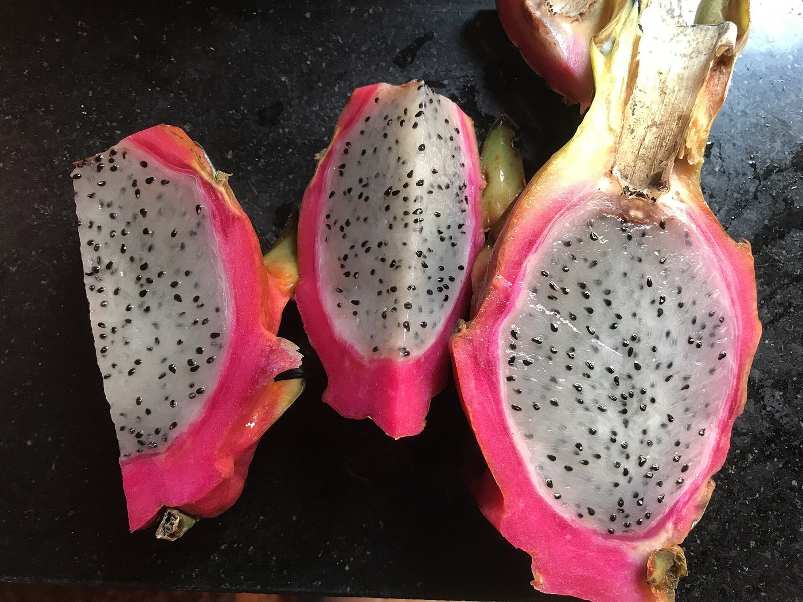
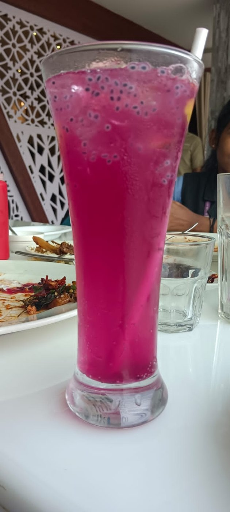
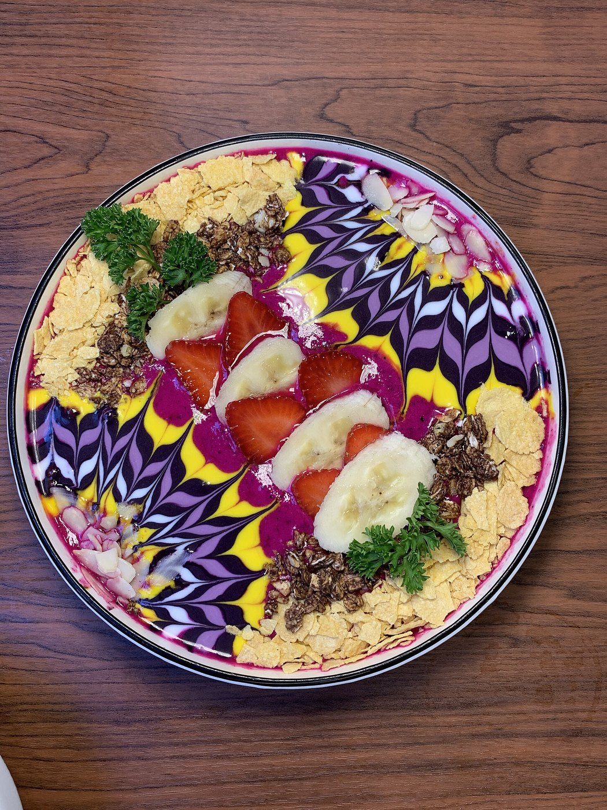
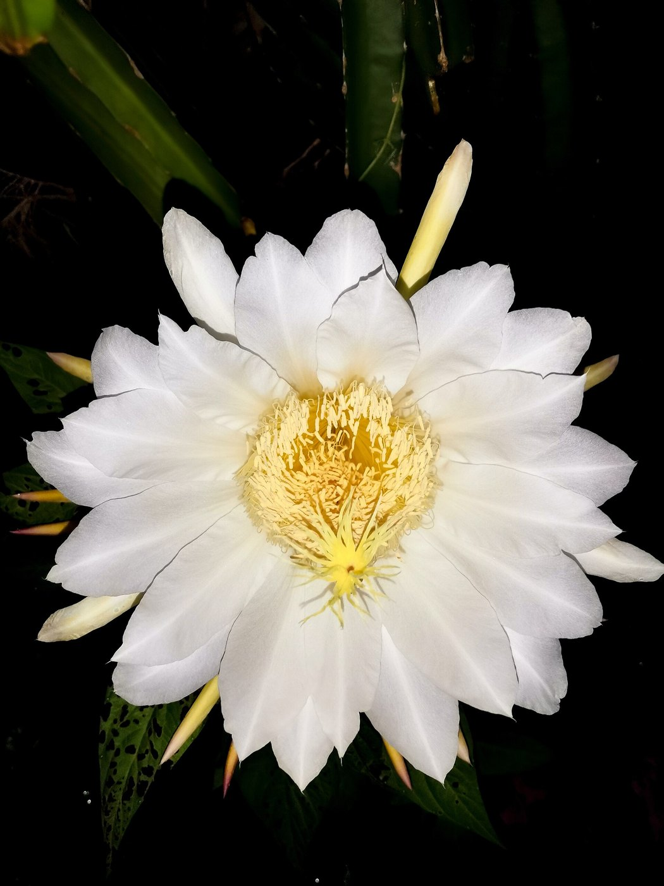
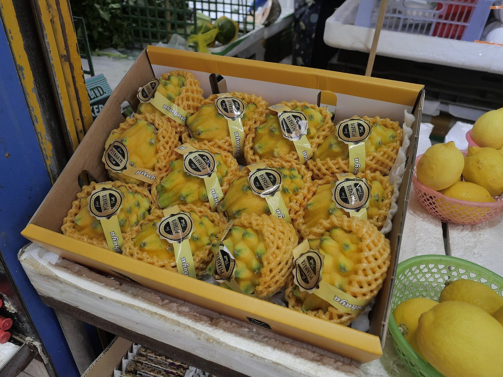
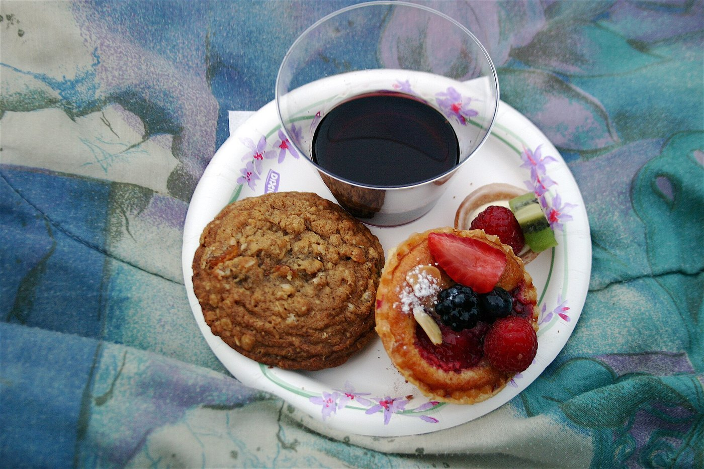

SUCCULENT BOTANICAL PURITY BRED FROM NIGHT-BLOOMING HYLOCEREUS.
Dragonfruit Joy cultivates heirloom crimson, white, and golden pitaya varieties across sustainable trellis orchards. We cold-press raw unpasteurized nectars rich in natural betacyanin pigments, dietary prebiotic fibers, and essential seed lipids.

SUSTAINABLE TROPICAL ORCHARD HARVEST
Every succulent fruit is nurtured through nocturnal hand-pollination, solar ripening, and artisan zero-heat cold pressing.
Bio-Active Betacyanin Complex
Our red-fleshed pitaya contains concentrated betalain pigments—powerful water-soluble antioxidants that neutralize reactive oxygen species and support cellular vitality.
Nocturnal Hand Pollination
Because Hylocereus cactus blossoms open for a single night, our botanists hand-pollinate each pristine flower with soft sable brushes to ensure peak fruit density.
Precision Drip Irrigation
Orchards operate closed-circuit subterranean drip networks delivering mineral-rich water directly to cactus roots, reducing water usage by 65% compared to broadcast sprayers.
THE ARTISANAL PITAYA CURATION
Explore our seasonal cold-pressed nectars, fresh harvest varieties, and gourmet culinary creations.

NECTAR 01Raw Magenta Nectar
Unfiltered, zero-heat hydraulic pressed dragon fruit juice retaining all natural pulp enzymes, crisp acidity, and rich betacyanins.

GASTRONOMY 02Pitaya Breakfast Bowl
Velvety blended frozen pitaya puree served with organic toasted coconut shavings, wild wildflower honey, and sprouted grains.

CULTIVAR 03CrispValue White Pitahaya
Classic Hylocereus undatus offering a refreshing melon-like crispness with balanced natural sweetness and delicate floral notes.

RESERVE 04Golden Selenicereus
Rare yellow dragon fruit celebrated for its high natural sugar density (19° Brix) and tropical notes reminiscent of lychee and pear.
Artisanal Pitaya Sorbet
Crafted from pure strained red dragon fruit reduction and organic lime juice, delivering an electric magenta palate cleanser.

PATISSERIE 06Haute Pitaya Patisserie Tart
Almond frangipane shell filled with vanilla bean pastry cream and adorned with layered dragon fruit wheels and edible gold leaf.
THE PHYTOCHEMICAL ARCHITECTURE OF BETACYANINS
Unlike common berries whose crimson pigments derive from anthocyanins, the intense magenta hue of red dragon fruit (Hylocereus polyrhizus) is produced by betacyanins—complex nitrogen-containing glycosides. These unique molecules remain structurally stable across a wide pH spectrum (3.0 to 7.0), maintaining their vibrant color and antioxidant potency.
Clinical evaluations demonstrate that betacyanins exhibit remarkable free-radical scavenging capabilities, shielding vascular endothelium against oxidative stress while providing vital prebiotic oligosaccharides that nourish beneficial gut microflora.

TROPICAL BOTANICAL NUTRITION MATRIX
Standardized nutritional metrics per 100 grams of raw unpasteurized fruit.
| Botanical Specimen | Betacyanin Content | Brix Sugar Density | Prebiotic Fiber | Seed Fatty Acids (Omega-3/6) |
|---|---|---|---|---|
| Red Pitaya (H. polyrhizus) | 38.2 mg / 100g (High) | 18.5° Brix | 2.9 g / 100g | 52% Linoleic Acid |
| White Pitaya (H. undatus) | < 0.5 mg / 100g (Trace) | 14.0° Brix | 2.7 g / 100g | 49% Linoleic Acid |
| Yellow Pitaya (S. megalanthus) | 0.0 mg (Carotenoids) | 19.5° Brix (Peak) | 3.1 g / 100g | 46% Linoleic Acid |
| Standard Cultivated Blueberry | 0.0 mg (Anthocyanins Only) | 12.5° Brix | 2.4 g / 100g | Trace Seed Lipids |
PRAISE FROM BOTANISTS & EXECUTIVE CHEFS
Reflections from culinary artisans and nutritionists who utilize our botanical harvest.
"The cold-pressed red pitaya nectar delivers an extraordinary floral crispness with a natural acidity that anchors our seasonal tasting menu. The vibrant magenta color is completely natural yet visually mesmerizing on the plate."
"Finding truly ripe dragon fruit with an authentic 18° Brix sweetness is nearly impossible in standard wholesale channels. Dragonfruit Joy's vine-ripened orchard crates have transformed our breakfast bowls into a culinary destination."